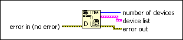

IrDA Discover Function
Owning Palette: IrDA Functions
Requires: Base Development System (Windows)
Finds any IrDA-enabled devices within a detectable wireless boundary and returns the ID and name of each device and the number of devices detected.

 Add to the block diagram Add to the block diagram |
 Find on the palette Find on the palette |